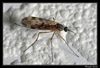
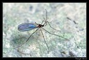
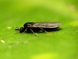
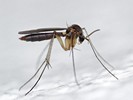
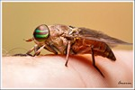
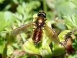
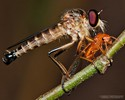
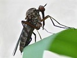
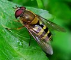
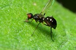
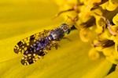
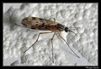
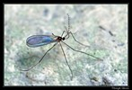
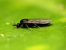
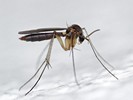
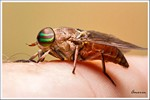
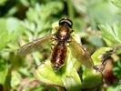
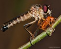
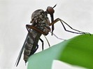
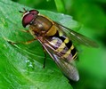
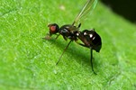
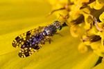
 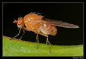
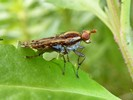
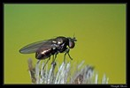
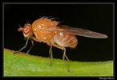
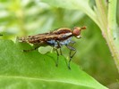
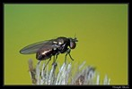
 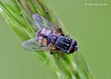
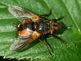
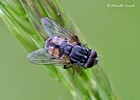
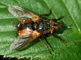
Key to families of Neodiptera
1.
- Antennae shorter, scape and pedicel usually short, flagellomeres heteronomous: first flagellomere large,
(sometimes annulated), second and other flagellomeres in the form of a stylus or arista; usually less than 6 flagellomeres. If 10 to 35 flagellomeres
(Rachiceridae), those are pectinate or serrate. Palpi usually with 1 or 2 segments


Neodiptera
Brachycera
- Antennae usually long, with scape and pedicel and at least 4 homonomous flagellomeres.
Palpi usually with 3-5 segments.


2